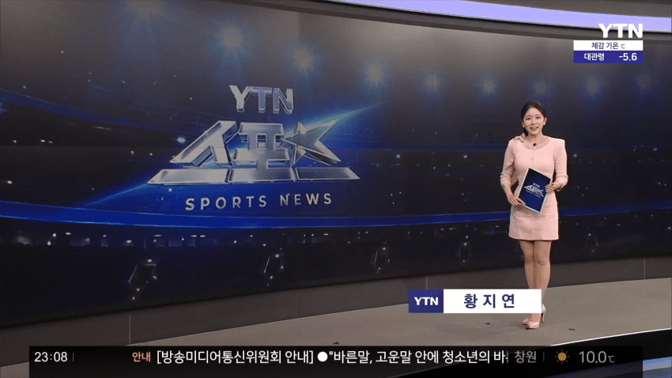
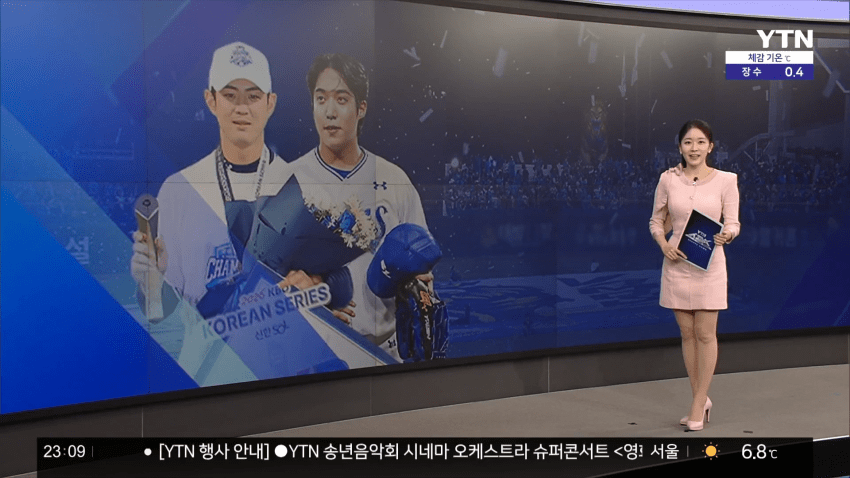
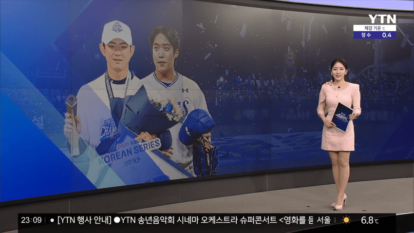
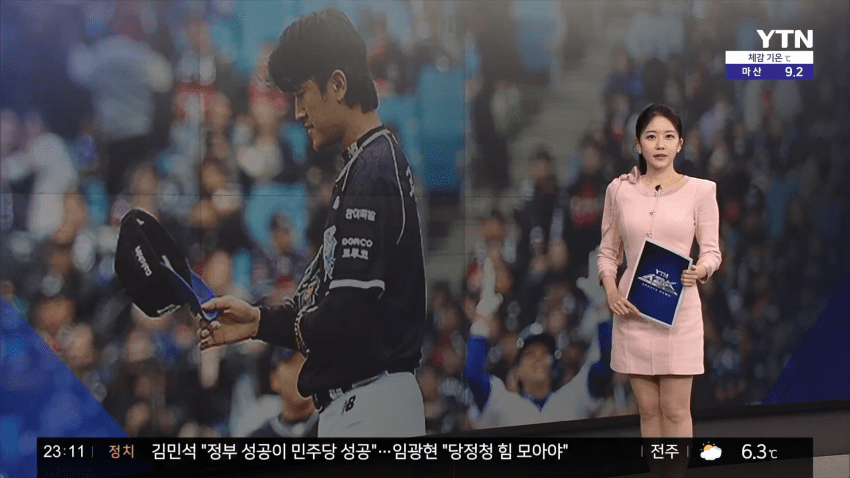
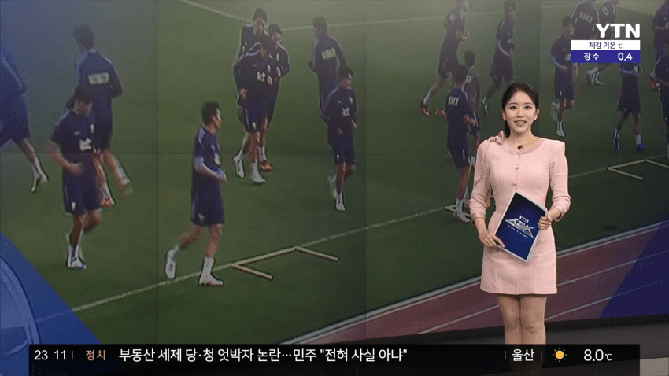
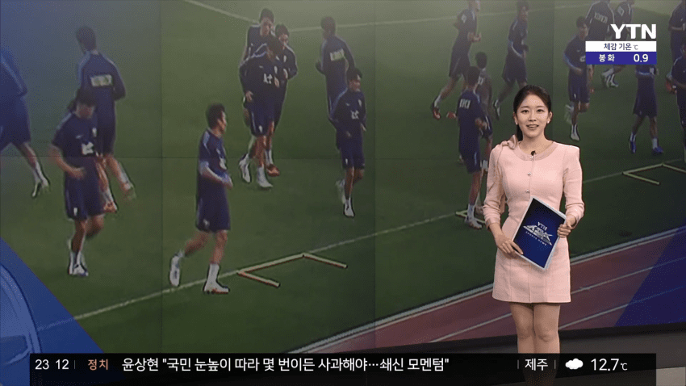
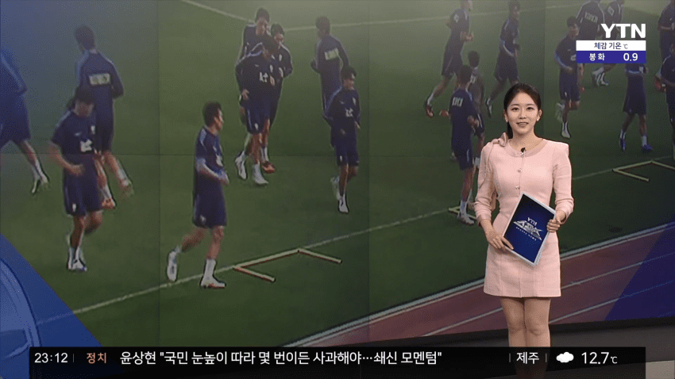
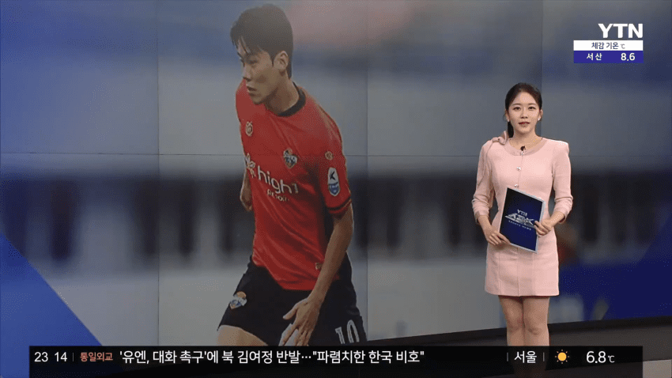
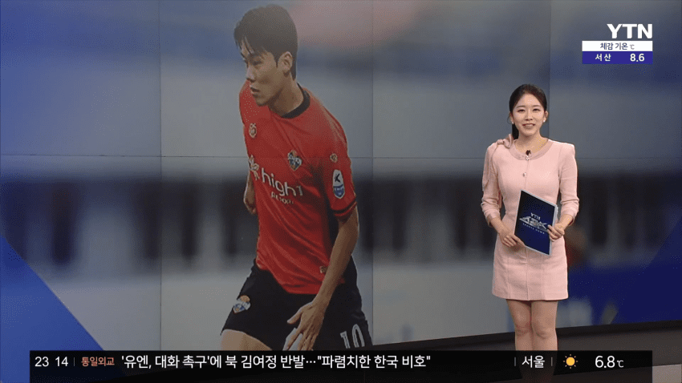
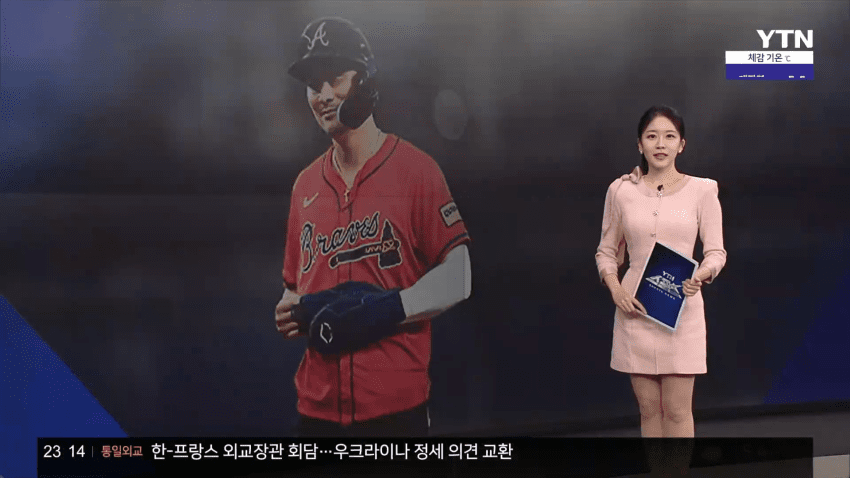
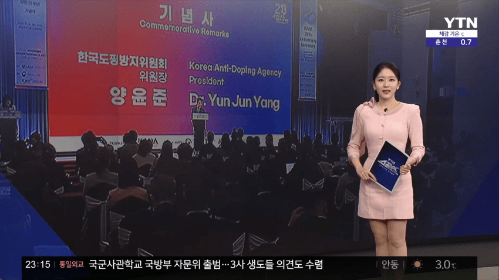
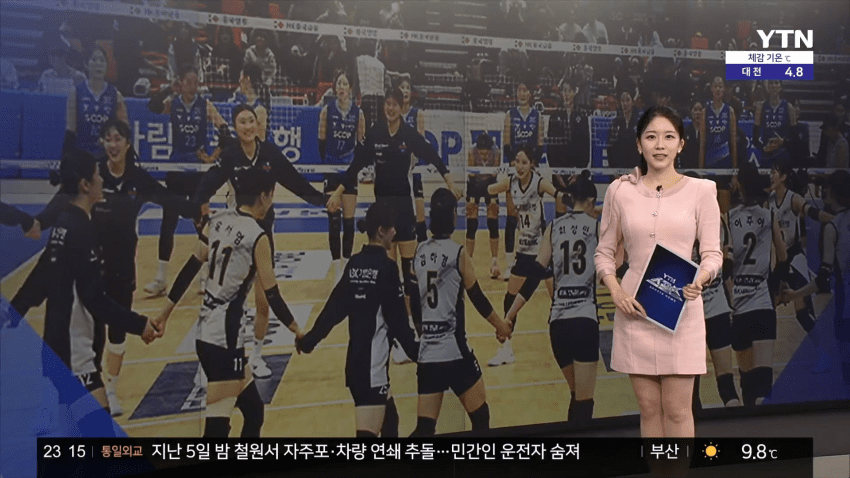












댓글
수집 당시 댓글 19개
아갤러1 · 11.11 00:34:34
ㅇㅇ · 11.11 03:38:34
아갤러2 · 11.11 03:44:27
ㅇㅇ · 11.11 07:28:15
ㅇㅇ · 11.11 07:34:36
ㅇㅇ · 11.11 07:35:00
땨뗘(봇) · 11.11 09:41:05
ㅇㅇ · 11.11 09:43:22
· ㅇㅇ · 11.11 09:49:30
82641 · 11.11 09:44:51
ㅇㅇ · 11.11 10:10:35
ㅇㅇ · 11.11 10:16:36
ㅇㅇ · 11.11 10:16:40
ㅇㅇ · 11.11 10:19:24
ㅇㅇ · 11.11 11:18:00
ㅇㅇ · 11.11 13:20:50
ㅇㅇ · 11.11 13:49:20
ㅇㅇ · 11.11 14:00:08
ㅇㅇ · 11.11 15:59:22